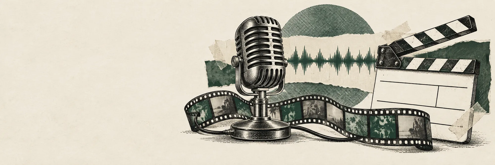

← All workCase 04 / 07
Independent build
An AI video studio with a human in the loop
Research, script and video for a Malay-language AI explainer channel, orchestrated end to end, with approval gates in front of every paid step.
- Role
- Design and build
- When
- 2026
- Status
- Pipeline working

The problem
Short explainer videos need research, a script, generated shots and editing. Fully automatic AI output drifts off-topic and burns paid generation credits on takes nobody wanted.
What I built
Airflow runs two pipelines: topic research, and video production. Claude writes scripts that must pass schema validation, and episodes are dialogues between two recurring characters, Naro and Exa, kept consistent with locked reference images.
A FastAPI dashboard holds the approval gates: nothing moves from script to paid video generation without a human yes. The pipeline runs in dry-run mode by default, so tests never spend credits.
- topic research
- scriptschema-validated
- approval gatea human says yes
- video productioncharacter-locked shots
- approval, then publish
Where it stands
The pipeline works end to end, and its first slice passed my acceptance testing in July 2026. A new episode format is in progress before the channel launches.
- Python
- Airflow
- Claude
- Supabase
- FastAPI
- Veo